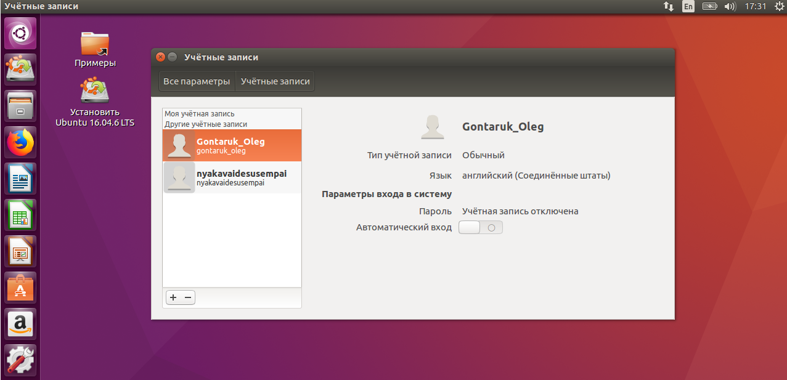
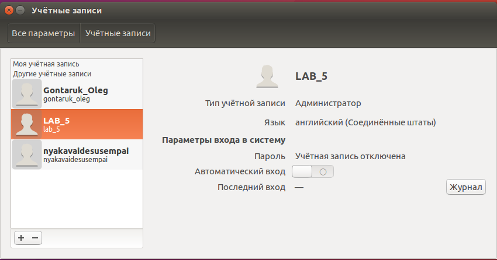
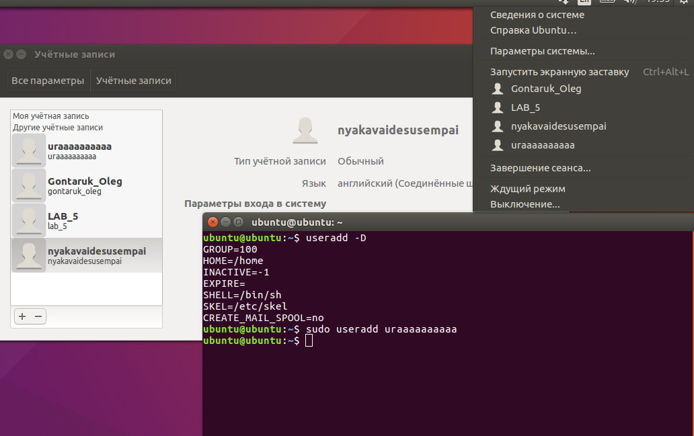

Тема: Управління користувача та групами у Linux.
Мета: ознайомитися з управлінями користувачами у Linux
- I.Дати визначення поняттям: реєстраційне ім’я, ідентифікатор користувача, ідентифікатор групи, реєстраційна оболонка, домашній каталог.
- II.Визначити місцезнаходження файлу прихованих паролів.
- III.Визначити команди для роботи з користувачами та групами.
- IV.Завантажити і запустити Linux.
- V.Скласти довідник для команд і конфігураційних файлів, розписавши, для чого які параметри потрібні.
- VI.Перейти до консолі та створити нову групу і користувача.
- VII.Додати нового користувача до новоствореної групи.
- VIII.Змінити пароль новоствореного користувача(group Voenka, user General).
- IX.Вийти із системи і увійти у систему з новим паролем.
- X.Перевірити в графічному інтерфейсі появу нової групи і користувача, який до неї належить.
- XI.Повернутися до консолі та видалити новоствореного користувача, а потім групу.
- XII.Виконати всі операції, починаючи з 5 завдання, з використанню інтерфейсу, додатки(інші користувачі, групи).


